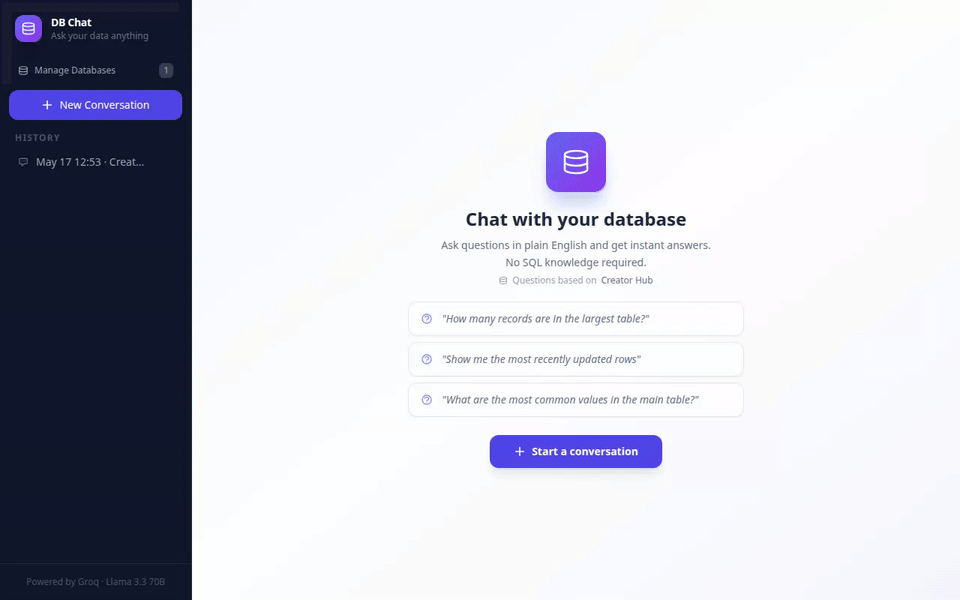
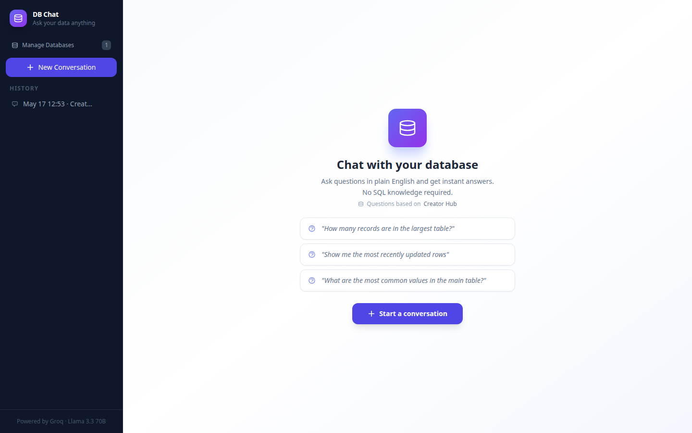
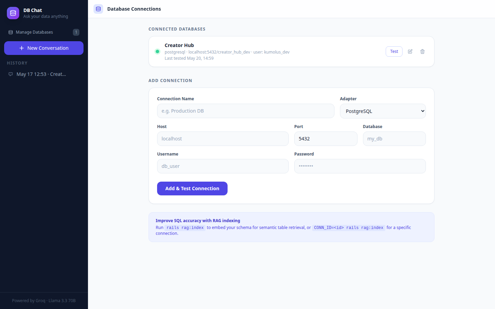

A Rails 8 app that lets you have natural-language conversations with any PostgreSQL database. Ask a question in plain English, get back a readable answer with a data table — no SQL required.
Why it's not deployed
This is a single container with no external scraping — nothing about it is unsafe to run publicly. It isn't deployed simply because doing so well means either a locked-down demo database or trusting strangers with SQL generation against something real. The GIF below is the actual app, run locally, asking real questions against a real seeded schema.
How it works
Rather than stuffing an entire schema into every prompt, the app embeds each table's schema description and retrieves only the relevant ones per question — classic RAG, applied to SQL generation instead of documents.
| 1. Question | "customers who haven't ordered in 90 days" |
| 2. Retrieve | Embed via Ollama, top-6 relevant tables via pgvector |
| 3. Generate | Groq (Llama 3.3 70B) writes the SQL |
| 4. Execute | Read-only, capped at 200 rows |
| 5. Narrate | Results sent back to Groq for a plain-English answer |
See it work
Captured live from the running app — including the read-only safety layer correctly deflecting a destructive request.

Scrolling through a real conversation — note the deflected "delete posts table" request

Landing screen with AI-suggested starter questions

Connection manager — add and test any Postgres database
Engineering highlights
The LLM is told to only produce SELECT statements, but that's a suggestion, not a guarantee. A regex layer blocks INSERT/UPDATE/DELETE/DROP/CREATE/ALTER/TRUNCATE before anything reaches the target database, independent of what the model returned — and target-database queries run over a raw connection entirely separate from the app's own data.
Without RAG indexing, the app falls back to the full schema in the prompt — fine on a handful of tables, worse as the schema grows. The fallback is deliberate: a new database is usable immediately, and indexing is an accuracy upgrade you reach for once questions start missing.
Tech stack
| Framework | Ruby on Rails 8.1 |
| Database | PostgreSQL + pgvector |
| LLM | Groq — llama-3.3-70b-versatile |
| Embeddings | Ollama — nomic-embed-text (768-dim), HNSW index |
| Frontend | Hotwire (Turbo Streams + Stimulus) |